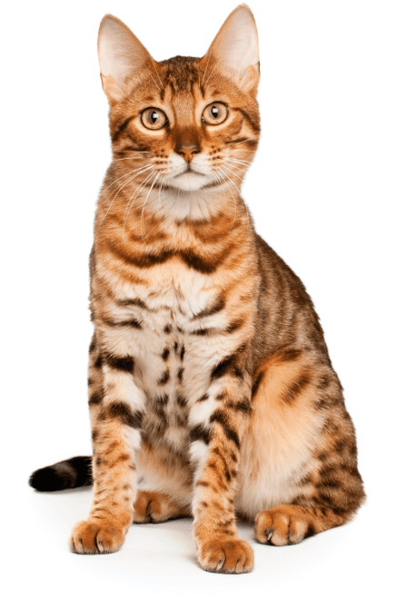

 CLUMPING
CLUMPING VEGETALE CAT LITTER
CAT STEP TOFU is a high-quality biodegradable soybean-based cat litter. Exclusive biotechnology optimizes the ability of the product granules to stick together and effectively absorb liquid and odor.
CAT STEP TOFU is completely soluble in water, so it can be easily flushed down the toilet.
HARD CLUMPING
ENVIRONMENTALLY FRIENDLY
EXCELLENT ODOR CONTROL
MADE OF SOYABEAN FIBER